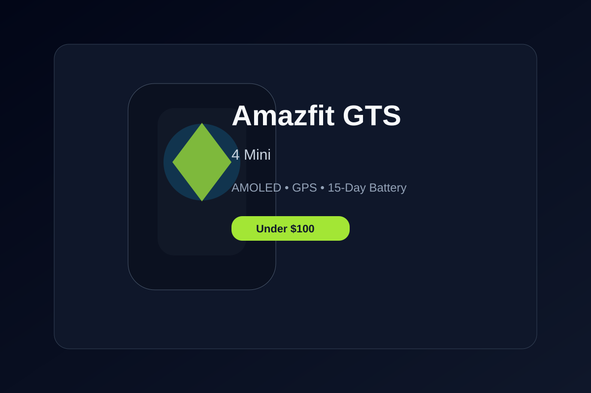

Amazfit GTS 4 Mini Review: Premium Health Metrics Under $100
Delivers a genuine smartwatch experience with a vivid HD AMOLED display, standalone 5-satellite GPS, and 15-day battery life.
For buyers who want Apple Watch styling without the Apple Watch price tag, the Amazfit GTS 4 Mini is one of the smartest compromises in the market. It looks polished, sits comfortably on the wrist, and does not demand daily charging as many premium alternatives do.
The 1.65-inch AMOLED display is vibrant and sharp, with strong brightness in daylight and enough contrast to keep the interface looking premium. Zepp OS runs cleanly, with health data presented in a way that feels more focused than cluttered—especially for people who care about daily metrics rather than endless smartwatch gimmicks.
The standout feature is the built-in GPS. It gives runners and cyclists the ability to map a route without carrying a phone, which is a meaningful advantage in a device at this price. It also supports a range of workout modes and health tracking features, helping it feel more complete than most budget alternatives.
Sleep tracking, SpO2 monitoring, heart-rate logging, and everyday fitness data all work well enough to satisfy most users. Battery life is exceptional—up to 15 days in lighter use—making the watch feel more practical for long-term wear than its inexpensive tag might suggest.
This is a compelling option for anyone who wants a fashionable, capable smartwatch without paying the premium for a high-end nameplate.
Key Takeaways
- 15-day battery life on a single charge
- Built-in GPS for phone-free workout mapping
- Bright, crisp AMOLED display with Always-On functionality
- Strong health metrics and good everyday comfort